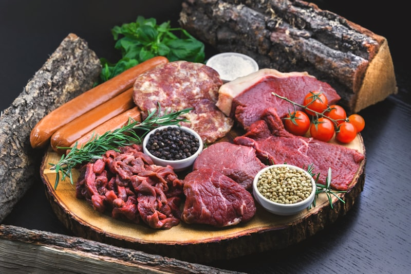

Proteína Inteligente: Tu Aliada Hormonal
La proteína animal no es tu enemiga — es la materia prima que tu cuerpo necesita para construir músculo, producir hormonas y mantener tu metabolismo activo.
El secreto no está en CUÁNTA carne comes, sino en CÓMO la eliges, la preparas y la combinas.
Cuando combinas proteína de calidad con vegetales ricos en fibra y grasas saludables, creas un plato que estabiliza tu insulina, te sacia por horas y alimenta tu sistema hormonal.
En esta guía vas a aprender:
• 🥩 Cómo elegir los mejores cortes para tu equilibrio hormonal
• 🍗 Recetas con pollo, res y pescado que activan tu metabolismo
• 🥦 Combinaciones inteligentes que evitan picos de insulina
• ⏱️ Preparaciones rápidas para tu día a día real
Frecuencia recomendada: incluye proteína animal 3-4 veces por semana, alternando con legumbres y huevos los demás días. Prefiere siempre cortes magros y cocciones al horno, salteados o al vapor.

🔪 Guía de Cortes Inteligentes
No todas las carnes son iguales. Aprende a elegir los cortes que más benefician tu equilibrio hormonal y cómo prepararlos para máximo aprovechamiento.
- ── RES ──
- 🟢 Lomo de res — magro, alto en hierro y zinc
- 🟢 Falda (flank steak) — magra, ideal para desmechada
- 🟢 Carne molida magra (95%) — versátil para cualquier receta
- ── POLLO/PAVO ──
- 🟢 Pechuga de pollo sin piel — la proteína magra por excelencia
- 🟢 Muslo de pollo sin piel — más jugoso, ligeramente más grasa
- 🟢 Pechuga de pavo — ultra-magra, perfecta para meal prep
- ── PESCADO ──
- 🟢 Salmón — rico en omega-3, antiinflamatorio natural
- 🟢 Sardinas — omega-3 + calcio + vitamina D
- 🟢 Atún fresco — alto en proteína, bajo en grasa
- 🟢 Trucha — omega-3, fácil de preparar
- Elige cortes que puedas ver la fibra de la carne sin capas gruesas de grasa visible
- Los pescados grasos (salmón, sardinas) son la excepción: su grasa es omega-3 antiinflamatoria
- Compra carne molida que diga '95% magra' o '90% magra' en la etiqueta
- El pollo con piel tiene el doble de grasa — quítale la piel antes de cocinar
- 🔴 Costillas de res/cerdo — alto contenido de grasa saturada
- 🔴 Tocino/bacon — ultraprocesado, alto en sodio
- 🔴 Embutidos (salchichas, chorizo, mortadela) — procesados con aditivos
- 🔴 Carne frita o empanizada — la fritura anula los beneficios
- 🔴 Pollo con piel frito — duplica las calorías y la grasa
- No necesitas eliminarlos — consúmelos como excepción, no como base
- Si comes embutidos, busca versiones sin nitratos y bajas en sodio
- Sustituye tocino por pechuga de pavo en rodajas para desayunos
- En vez de empanizar: usa semillas de linaza o avena como cobertura al horno
- ✅ AL HORNO — Temperatura media (180°C), jugosa y sin grasa añadida
- ✅ SALTEADO RÁPIDO — Sartén antiadherente, poco aceite, alta temperatura, cocción rápida
- ✅ AL VAPOR / HERVIDO — Preserva nutrientes al máximo, ideal para pescado
- ⚠️ A LIMITAR:
- ❌ FRITO — Agrega grasa innecesaria y genera compuestos inflamatorios
- ❌ EMPANIZADO — Añade carbohidratos refinados que disparan la insulina
- ❌ AHUMADO EXCESIVO — Puede generar compuestos potencialmente dañinos
- Sartén antiadherente + 1 cdita de aceite de oliva = la combinación perfecta para saltear
- Al horno con hierbas: romero, tomillo, orégano realzan sabor sin añadir calorías
- Marinadas con limón + ajo + hierbas = carne tierna y sabrosa sin azúcar ni sal excesiva
- El pescado al vapor con limón y eneldo está listo en 8-10 minutos — la opción más rápida

🥩 Recetas con Res — Potencia y Sabor
La carne de res es rica en hierro, zinc y vitamina B12 — nutrientes clave para tu energía y producción hormonal. Estas recetas la combinan con vegetales para un impacto glucémico mínimo.
- 100g de carne molida magra
- 1 taza de espinaca fresca
- ½ aguacate en cubos
- 1 cdita de aceite de oliva
- 1 diente de ajo picado
- Sal marina y orégano al gusto
- Calienta el aceite de oliva en sartén antiadherente a fuego medio-alto
- Saltea la carne molida con el ajo picado y el orégano hasta dorar (5-6 min)
- Agrega la espinaca fresca y cocina 2 minutos hasta que se reduzca
- Sirve en un plato hondo y corona con los cubos de aguacate fresco
- 4 hojas grandes de repollo
- 120g de carne de res cocida y desmechada
- 1 cda de semillas de chía
- ½ cdita de cúrcuma en polvo
- 1 diente de ajo picado
- Sal al gusto
- Blanquea las hojas de repollo en agua hirviendo 2 minutos para suavizarlas
- Mezcla la carne desmechada con la cúrcuma, chía y ajo
- Coloca la mezcla en el centro de cada hoja y enrolla firme
- Cocina al vapor por 10 minutos hasta que estén tiernos
- 100g de carne de res magra en tiras finas
- 1 calabacín grande en medias lunas
- ½ pimentón rojo en tiras
- 1 diente de ajo picado
- 1 cdita de aceite de oliva
- Pimienta negra y sal al gusto
- Corta la carne en tiras finas y sazónalas con ajo, sal y pimienta
- Calienta el aceite en sartén a fuego alto y sella la carne 3-4 minutos
- Retira la carne y en la misma sartén saltea el calabacín y pimentón 4 minutos
- Devuelve la carne, mezcla todo y sirve caliente
- 2 huevos
- 50g de carne mechada (sobrante del día anterior)
- ½ taza de espinaca picada
- ¼ de aguacate en láminas
- Sal marina al gusto
- Bate los huevos con la espinaca picada y una pizca de sal
- Vierte en sartén antiadherente a fuego medio
- Cuando esté casi cuajada, coloca la carne mechada y el aguacate en un lado
- Dobla la tortilla, cocina 1 minuto más y sirve
- 100g de carne de res magra en cubos
- 1 taza de brócoli en ramitas
- ½ aguacate en cubos
- 1 cdita de aceite de oliva
- Ajo y sal al gusto
- Jugo de ½ limón
- Saltea la carne en aceite de oliva con ajo y sal hasta dorar bien (5-6 min)
- Cocina el brócoli al vapor 4-5 minutos — que quede tierno pero firme
- Arma el bowl: base de brócoli, encima la carne, corona con aguacate
- Exprime el limón por encima y sirve inmediatamente

🍗 Recetas con Pollo y Pavo — Ligeras y Saciantes
El pollo y el pavo son las proteínas más versátiles y accesibles. Con estas recetas, las transformas en platos que nutren tus hormonas sin complicarte la vida.
- 1 pechuga de pollo sin piel
- 1 calabacín en rodajas
- 1 taza de brócoli en ramitas
- ½ pimentón rojo en tiras
- Jugo de 1 limón
- 1 cda de aceite de oliva
- Romero fresco, sal y pimienta
- Marina la pechuga en limón, aceite, romero, sal y pimienta por 15 minutos
- Distribuye los vegetales en una bandeja para horno con un toque de aceite
- Coloca la pechuga sobre los vegetales y hornea a 190°C por 25 minutos
- La pechuga se cocina jugosa sobre los vegetales que absorben todos los jugos
- 120g de pechuga de pollo cocida y desmechada
- 4 hojas grandes de lechuga romana
- ¼ taza de zanahoria rallada
- ¼ de aguacate en tiras
- 1 cda de yogur griego natural
- Cilantro fresco picado
- Desmecha el pollo cocido y mezcla con el yogur griego y cilantro
- Lava bien las hojas de lechuga y sécalas — serán tu 'tortilla'
- Coloca el pollo, la zanahoria rallada y el aguacate sobre cada hoja
- Enrolla como taco y come con las manos — fresco y crujiente
- 120g de pechuga de pollo en cubos
- 1 taza de champiñones laminados
- 6 espárragos cortados en trozos
- 1 diente de ajo picado
- 1 cdita de aceite de oliva
- Tomillo seco, sal y pimienta
- Sella los cubos de pollo en aceite de oliva a fuego alto hasta dorar (4-5 min)
- Retira el pollo y en la misma sartén saltea champiñones y espárragos con ajo
- Cuando los champiñones suelten su líquido, devuelve el pollo
- Espolvorea tomillo, mezcla 1 minuto más y sirve
- 200g de carne molida de pavo
- ½ taza de espinaca picada fina
- 1 huevo
- 2 cdas de avena en hojuelas
- Ajo en polvo, comino, sal y pimienta
- Hojas de lechuga para servir
- Mezcla el pavo molido con espinaca, huevo, avena y especias hasta integrar bien
- Forma 3-4 hamburguesas y cocina en sartén antiadherente 5 min por lado
- Sirve cada hamburguesa envuelta en hoja de lechuga en vez de pan
- Acompaña con rodajas de tomate y aguacate

🐟 Recetas con Pescado — Omega-3 y Antiinflamación
Los pescados grasos son la fuente más poderosa de omega-3, el ácido graso que combate la inflamación crónica — el motor silencioso de la resistencia a la insulina.
- 1 filete de salmón (150g)
- Jugo de 1 limón
- 1 cda de aceite de oliva
- Eneldo fresco (o seco)
- 1 diente de ajo en láminas
- Sal y pimienta negra
- Precalienta el horno a 200°C y forra una bandeja con papel aluminio
- Coloca el salmón, baña con limón y aceite, distribuye ajo y eneldo encima
- Cierra el aluminio formando un paquete y hornea 18-20 minutos
- El salmón queda jugoso, tierno y lleno de sabor sin grasa añadida
- 1 lata de atún en agua (escurrido)
- 1 taza de mix de hojas verdes
- ½ pepino en rodajas
- 5 tomates cherry partidos
- ¼ de aguacate en cubos
- Aceite de oliva, limón y sal
- Arma la base con las hojas verdes, pepino y tomates cherry
- Calienta el atún 1 minuto en sartén con un toque de aceite (opcional)
- Coloca el atún tibio sobre la ensalada fría y agrega el aguacate
- Adereza con aceite de oliva, jugo de limón y sal marina
- 6 sardinas frescas (o 2 latas en aceite de oliva)
- 2 tomates maduros en rodajas
- 3 dientes de ajo laminados
- 1 cda de aceite de oliva
- Perejil fresco picado
- Sal, pimienta y pimentón
- Distribuye las rodajas de tomate en una bandeja para horno
- Coloca las sardinas encima, agrega ajo, aceite y especias
- Hornea a 200°C por 15 minutos (8 min si son de lata)
- Espolvorea perejil fresco al servir — el aroma es increíble
- 150g de filete de pescado blanco (tilapia, corvina) en cubos pequeños
- Jugo de 3-4 limones (debe cubrir el pescado)
- ¼ de cebolla morada en plumas finas
- ½ pepino en cubitos
- Cilantro fresco picado
- Sal, pimienta y un toque de ají (opcional)
- Corta el pescado en cubos pequeños y cúbrelo con jugo de limón en un bowl
- Refrigera 30-40 minutos removiendo una vez (el limón 'cocina' el pescado)
- Cuando esté blanco y firme, escurre y mezcla con cebolla, pepino y cilantro
- Sazona con sal, pimienta y ají al gusto — sirve bien frío

🥗 Combinaciones Inteligentes — Tu Plato Perfecto
La proteína sola no hace magia. El poder está en CÓMO la combinas. Estas estrategias y recetas te enseñan a armar platos completos que mantienen tu insulina estable por horas.
- 🥗 50% del plato → Vegetales sin almidón (espinaca, brócoli, lechuga, calabacín, pepino)
- 🍗 25% del plato → Proteína magra (cualquiera de las recetas de esta guía)
- 🍠 25% del plato → Carbohidrato inteligente (camote, quinoa, arroz integral, legumbres)
- 🫒 + Grasa saludable → 1 cda de aceite de oliva, ¼ aguacate o un puñado de nueces
- 🥤 + Bebida → Agua, agua con limón o té sin azúcar
- SIEMPRE empieza comiendo los vegetales primero — la fibra frena la absorción de todo lo demás
- Luego come la proteína — estimula hormonas de saciedad antes del carbohidrato
- El carbohidrato AL FINAL — llega a tu intestino más lento gracias a la fibra y proteína previas
- Este orden simple puede reducir tu pico de glucosa hasta un 30% sin cambiar QUÉ comes
- ❌ Carne + arroz blanco solo → Falta fibra, el arroz dispara glucosa
- ❌ Carne + papa frita → Doble golpe: carbohidrato alto IG + grasa de fritura
- ❌ Pollo empanizado + refresco → Pan rallado + azúcar líquida = tormenta de insulina
- ❌ Carne con pan blanco → El pan tiene IG 75, casi como glucosa pura
- ❌ Proteína + jugo 'natural' → El jugo sin fibra llega a tu sangre en minutos
- Swap: arroz blanco → arroz + frijoles (las legumbres bajan el IG del plato completo)
- Swap: papa frita → camote asado o puré de coliflor
- Swap: empanizado → pollo sellado con especias y semillas como cobertura
- Swap: refresco/jugo → agua con limón, menta o pepino
- 500g de pechuga de pollo (para 4-5 porciones)
- 300g de carne molida magra (para 3 porciones)
- 1 cabeza grande de brócoli en ramitas
- 2 calabacines en rodajas
- 2 pimentones en tiras
- 3 tazas de espinaca
- Aceite de oliva, ajo, especias variadas
- Hornea todo el pollo a la vez (sazonado con diferentes especias) a 190°C por 25 min
- Mientras se hornea, saltea la carne molida con ajo en una sartén grande
- Cocina todos los vegetales al vapor en una olla grande (5-6 min)
- Divide en 7-8 contenedores: proteína + vegetales en cada uno. Refrigera hasta 4 días.
- ── MARINADA MEDITERRÁNEA ──
- Aceite de oliva + limón + ajo + romero + orégano
- ── MARINADA ASIÁTICA ──
- Salsa de soya baja en sodio + jengibre + ajo + aceite de sésamo
- ── MARINADA LATINA ──
- Limón + cilantro + comino + ajo + un toque de chile
- ── MARINADA ANTIINFLAMATORIA ──
- Cúrcuma + jengibre + pimienta negra + aceite de oliva + limón
- Mezcla los ingredientes de la marinada que prefieras en un bowl
- Sumerge la proteína (pollo, res o pescado) y deja reposar 30 min a 2 horas en refrigerador
- La marinada antiinflamatoria con cúrcuma es especial: la pimienta negra aumenta 2000% la absorción de la curcumina
- Prepara marinadas dobles y guarda la extra en frasco — dura 1 semana en refrigerador